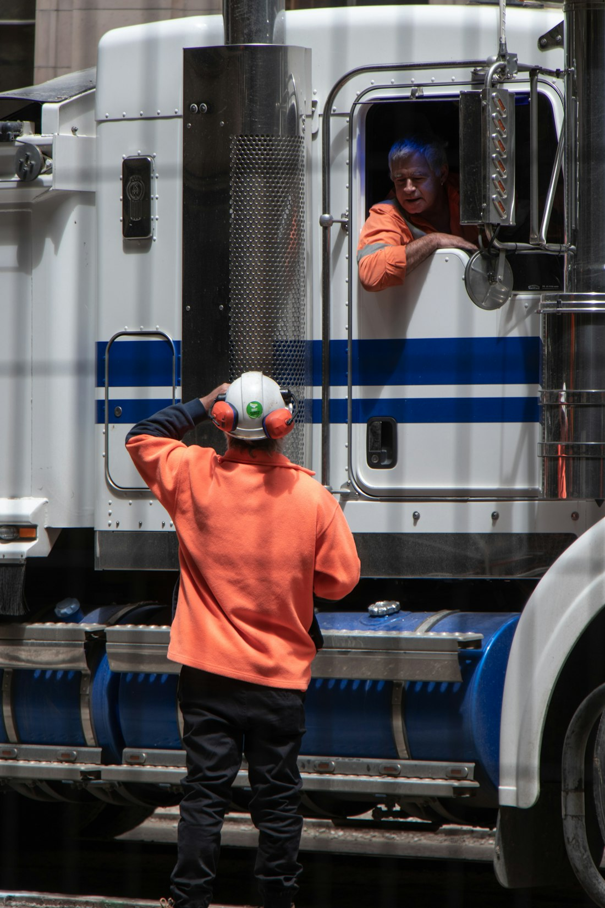

Bombas injetoras
Manutenção, ajuste, limpeza e reparo de bombas injetoras e sistemas de alimentação de combustível em motores diesel.
Injeção eletrônica diesel · Rio Verde - GO
Bombas e bicos injetores, sistema Common Rail, unidades injetoras UI/UP e diagnóstico eletrônico. Serviço técnico para caminhões, máquinas, tratores e utilitários.

Sobre nós
A RV Diesel Injeção Eletrônica cuida do sistema que alimenta o seu motor. Trabalhamos com bombas e bicos injetores, injeção eletrônica diesel, sistema Common Rail e unidades injetoras UI/UP.
Tudo começa com um diagnóstico preciso: identificamos a causa real da falha antes de mexer em qualquer peça. Assim, seu veículo volta a trabalhar com força, economia e confiabilidade.
Serviços
Manutenção, teste, regulagem e reparo de todo o sistema de injeção, do tanque ao bico.
Manutenção, ajuste, limpeza e reparo de bombas injetoras e sistemas de alimentação de combustível em motores diesel.
Manutenção, limpeza, teste e regulagem dos componentes responsáveis por enviar o combustível para o motor.
Análise de sintomas, sinais e leituras eletrônicas para identificar com precisão a causa do problema antes do reparo.
Manutenção do sistema de injeção de alta pressão presente nos motores diesel modernos: bomba, rail, válvulas e injetores.
Teste e reparo de unidades injetoras (UI) e unidades bomba (UP) usadas em caminhões e máquinas pesadas.
Sinais de que sua injeção precisa de atenção
Depoimentos
“O caminhão estava soltando fumaça e sem força. Fizeram o diagnóstico, revisaram os bicos e ele voltou a puxar como antes.”
“Serviço na bomba injetora do trator bem feito e explicado. Recomendo para quem trabalha no campo.”
“Levei a caminhonete com falha no Common Rail. Acharam o problema rápido e o consumo melhorou.”
Localização
Perguntas frequentes
Não encontrou a resposta? Pergunte no WhatsApp.
Veículos e máquinas com motor diesel, como caminhões, ônibus, caminhonetes, tratores e máquinas agrícolas. Confirme o seu modelo pelo WhatsApp.
Fumaça em excesso, perda de força, consumo alto, partida difícil e luz de injeção acesa são sinais comuns. O diagnóstico confirma a causa antes de qualquer reparo.
Sim. Fazemos manutenção e reparo do sistema Common Rail, além de bombas e bicos mecânicos e das unidades injetoras UI/UP.
Sim. Você pode trazer apenas a peça para teste, limpeza, regulagem ou reparo. Fale com a gente antes para combinar.
Depois do diagnóstico, explicamos o que foi encontrado e passamos o orçamento. O serviço só começa com a sua aprovação.
De segunda a sexta, das 7h30 às 18h.